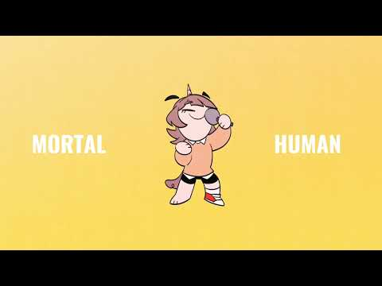
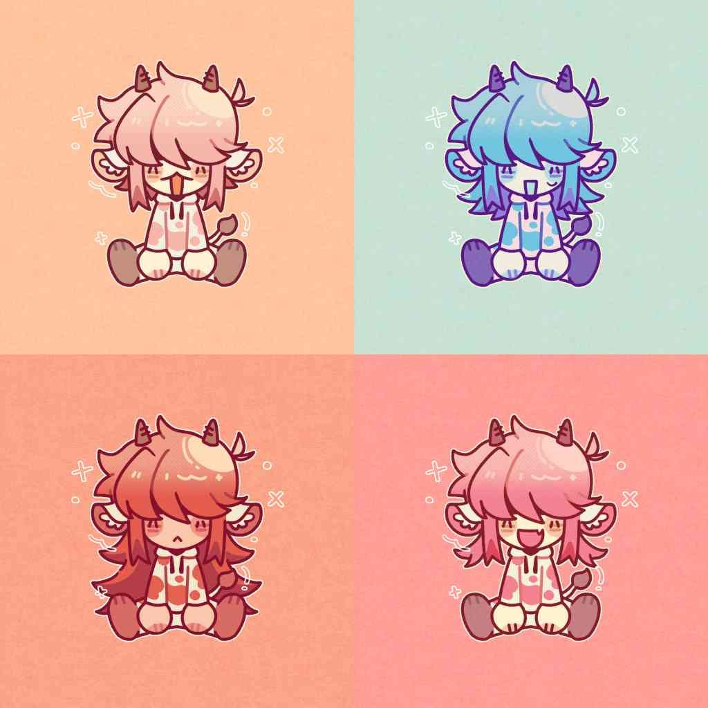
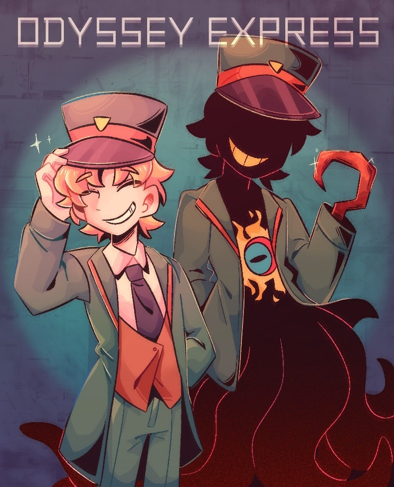

01 / ANIMATION
2D 電腦動畫
學習 2D 動畫製作、角色動態、 畫面節奏與視覺敘事。
你好，我是 Junmi。
一位熱愛 2D 動畫、動態影像與視覺敘事的學生。
我是多媒體動畫系的學生，主要學習 2D 電腦動畫 及 After Effects 動畫，對動畫製作抱有極大的熱情。
我希望透過不斷創作與學習，探索不同的視覺風格， 並走訪各地汲取靈感，將觀察到的事物轉化為 具有個人特色的作品。
對我而言，動畫不只是畫面移動， 更是將想像、情緒與故事轉化成視覺語言的方式。
以畫面傳遞情緒，以動態訴說故事。 持續累積作品，探索動畫與視覺敘事的更多可能。
學習 2D 動畫製作、角色動態、 畫面節奏與視覺敘事。
自學 AE 動畫，練習關鍵影格、 動態設計、循環動畫與視覺特效。
透過數位繪圖進行插畫創作、 角色設計與視覺風格探索。
每一份作品，都是一次新的嘗試與探索。（點擊卡片可查看詳細說明或觀看影片）

2D ANIMATION展示角色動態、場景演出與動畫練習。
2D Animation Storytelling展示文字動畫、循環動畫與動態視覺效果。
After Effects Motion Design
DIGITAL ART角色插畫、概念設計與個人繪圖創作。
Illustration Digital Art
VISUAL EXPERIMENT探索不同的構圖、色彩與視覺表現方式。
Experiment Visual Art主動學習 AE 動畫製作， 練習關鍵影格、動態效果與循環動畫。
透過課堂作業與個人練習累積作品， 持續嘗試不同的動畫與視覺風格。
持續精進動畫技巧，從日常生活、 不同文化與旅行經驗中汲取創作靈感。